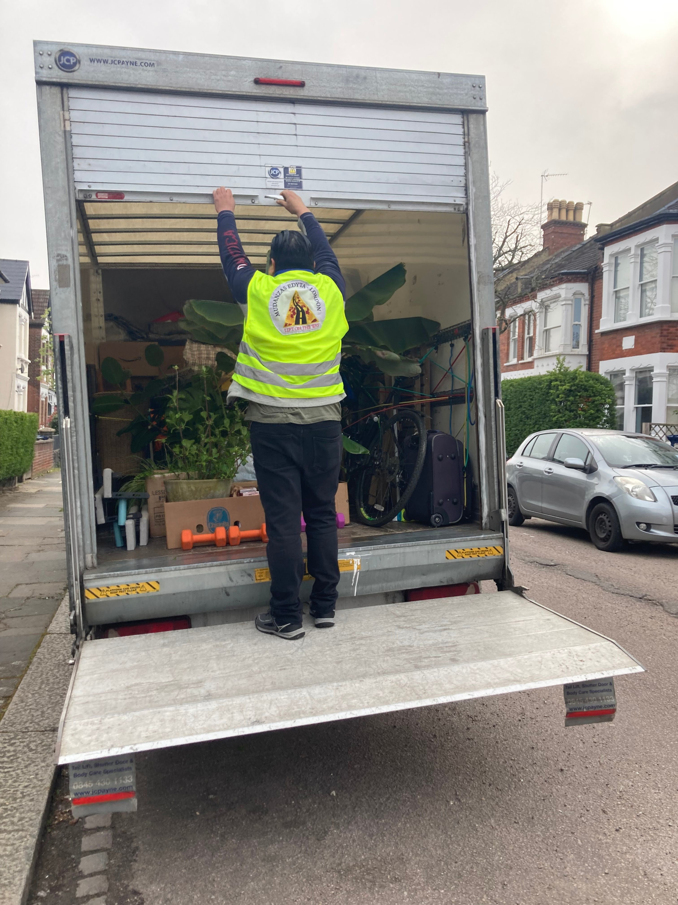
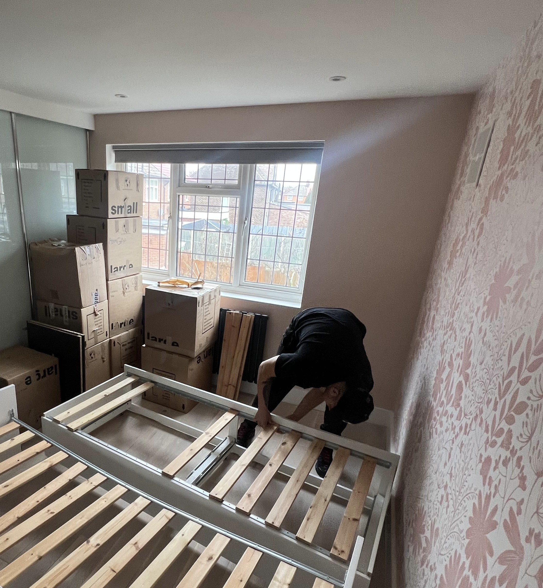
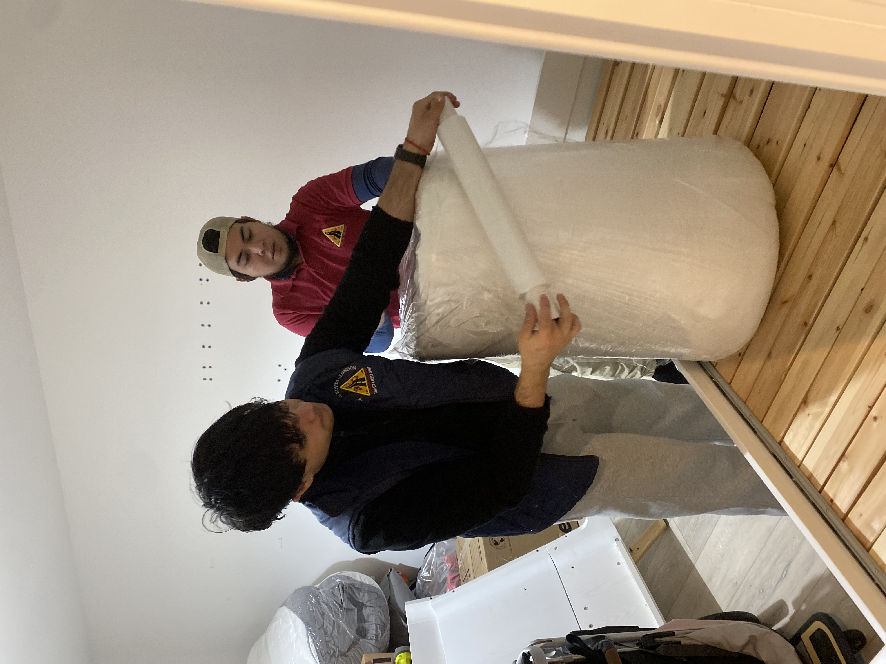
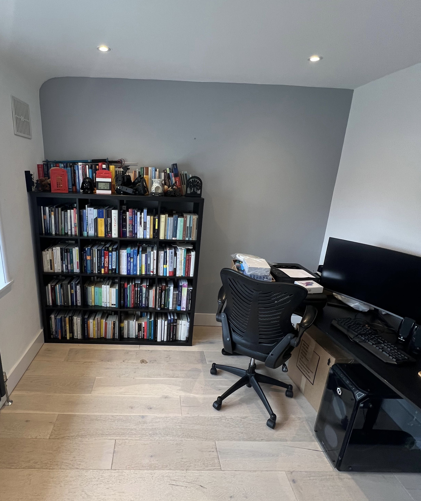

Removals Wimbledon – Reliable Local Moving Services in SW19
Moving house is one of the most stressful events people go through. In an area like Wimbledon, the right removals company makes a real difference. Wimbledon includes a mix of family homes, flat conversions, apartment blocks, busy roads, school traffic and parking restrictions — so local planning matters. Mudanzas Edyta London is a removals company for people who want clarity, careful handling, good communication and a team that understands the area.
Removals Wimbledon – What Makes Moving Here Different
Property types and access challenges in Wimbledon
Wimbledon and SW19 have a varied property landscape. You’ll find Victorian and Edwardian terraced homes, converted flats, purpose-built flats and apartment blocks, and larger family houses. Roads around Wimbledon town centre and Wimbledon Village each bring different access conditions. Upper-floor flats, narrow staircases, furniture that needs dismantling and restricted loading access are common. Parts of Wimbledon and Wimbledon Hill sit within conservation areas, with older housing stock, varied levels and more constrained access patterns. That often means trickier approaches and more careful vehicle planning. Good planning reduces stress, delays and damage risk — and helps our crew arrive prepared with the right equipment and enough time.
Parking, traffic and timing in Wimbledon
Merton uses Controlled Parking Zones in parts of Wimbledon, with operational hours such as Monday–Saturday 8:30am–6:30pm in at least some local zones, so parking and loading access planning matters. On many residential roads, permit restrictions and loading challenges affect how close the van can get. In some parts of Merton and Wimbledon, school-run times and School Street restrictions apply — typically around 8:15–9:15am and 2:45–3:45pm on school days — which makes timing more important for smoother loading and unloading. Busy roads and town-centre congestion add to the need for early planning. Wimbledon Village roads can feel tighter and more constrained than standard suburban streets, and council guidance on narrow roads, bends, junctions and turning heads underlines the need to keep access clear. Merton also uses LTNs and traffic filters: residential streets remain accessible, but through-traffic is discouraged, which matters for van routing and last-minute access. Choosing a local moving company Wimbledon customers can rely on means your move is planned around these realities, not against them.
Our team is used to working across SW19 and plans each job with access and timing in mind, so your house or flat move runs as smoothly as possible.

Our Removals Services in Wimbledon
House and flat removals in Wimbledon
We specialise in house removals Wimbledon and flat removals Wimbledon for larger home moves — from one-bedroom flats to four-bedroom family homes. Our service includes packing and unpacking when you need it, careful wrapping of furniture, mattress protection, and dismantling and reassembly of beds, wardrobes and desks. We protect wardrobes, mirrors, TVs and other fragile or bulky items, and we handle moves from upper-floor flats or terraced family homes with a structured crew and clear loading order. We organise the move so everything arrives in the right rooms and reassembly is done where required. For customers who value a clear process and careful handling, our local removals Wimbledon service is built around exactly that.

Packing, unpacking and furniture assembly
Many customers want a fuller service, not just transport. Our packing and moving service Wimbledon includes professional wrapping, labelled boxes, protection materials and assembly or disassembly where needed. That reduces risk and stress and is ideal for busy families, professionals or higher-value moves. We focus on organisation from start to finish — so your move feels controlled and less chaotic, with items arriving in the right place and furniture ready to use.

Office removals and small business relocations
We also offer office removals Wimbledon for local businesses. We handle office furniture, desks, chairs and IT equipment with organised labelling and a clear plan to minimise downtime. Useful for Wimbledon businesses and commercial premises who need a reliable, efficient relocation.

Man and van and smaller local moves
For smaller jobs we provide man and van Wimbledon services: small flat moves, single-room relocations, furniture transport and smaller local moves. We keep this flexible and straightforward — ideal when you don’t need a full house move but do want a professional, insured team.
Same-day moves and end of tenancy cleaning
Where possible we offer same-day or last-minute availability for urgent moves. We can also arrange end of tenancy cleaning as an add-on, so you can hand over keys on time and coordinate move-out and cleaning in one go. Useful for tenants and landlords who need to tie everything together smoothly.
How Our Wimbledon Removals Process Works
Planning the move properly before moving day
For larger jobs we use our detailed booking form so we can plan your move properly. You provide access information, parking details, number of bedrooms, what furniture needs assembling or disassembling, a rough inventory, heavy or fragile items and whether extra manpower is needed. That creates a clear job summary for the crew so everyone arrives prepared. For smaller or simpler one-day jobs you can use our instant quote calculator on the website and confirm via WhatsApp. More complex moves are better handled through the fuller booking form — find it on our services page or get in touch via contact.
Packing, loading, transport and unloading
On the day we follow a clear workflow: careful protection, organised loading order, safe transport and unloading into the correct rooms, with reassembly where required. We work as a team so the day feels more controlled and less chaotic — and so your belongings are handled with care from start to finish.
Why Local Knowledge Helps Wimbledon Moves Run More Smoothly
Understanding Wimbledon’s roads, schools and residential layout
There are real differences between Wimbledon town centre, residential SW19 streets and Wimbledon Village. School-run congestion, controlled parking and narrower residential access in some parts mean that routes and timing need to be planned around local conditions. We plan for those realities so your move runs smoothly instead of hitting avoidable delays.
Why local removals companies often outperform large national movers
Local removals companies tend to be more flexible and easier to communicate with. They understand access and loading issues in the area and are less likely to apply a one-size-fits-all approach. You get stronger accountability and a team that can adapt when something changes. For SW19 removals and moves across Wimbledon, that local focus often makes the difference between a stressful day and a well-run move.
Why Choose Mudanzas Edyta London for Your Wimbledon Move
A trusted local team with 10+ years of experience
We’re a family-run business with 100+ five-star reviews, experience across London and a bilingual service. We’re fully insured and take a professional, careful and reliable approach to every move. Our reputation is built on turning up, communicating clearly and treating your move as a priority.
A removals service built around clarity, care and real support
We offer transparent hourly pricing and a 2-hour minimum, with no hidden-fee approach. We focus on practical planning and can combine removals with packing, assembly and disassembly and end of tenancy cleaning when you need it. That makes us a strong choice for customers who want a move done properly — not the cheapest option, but better value.
Cheap Movers vs Professional Removals in Wimbledon
Cheaper movers can look appealing at first, but customers often end up paying in delays, poor communication, damage risk, lack of planning and unclear insurance. We’re not the cheapest — we’re better value for people who want a move done properly, with clarity, care and a team that shows up and gets the job done right.
| Cheap movers | Professional removals |
|---|---|
| Delays and poor communication | Clear planning, WhatsApp confirmation, reliable crew |
| Unclear or no insurance | Fully insured for your peace of mind |
| Risk of damage, no wrap or plan | Careful wrapping, loading order, trained handling |
| One-size-fits-all, no local knowledge | Local knowledge of Wimbledon, SW19, access and timing |
| Hidden fees or last-minute surprises | Transparent hourly pricing, 2-hour minimum, no hidden fees |
Whether you’re planning a full house move, a flat move, or need office removals or a man and van in Wimbledon, we’re here to help. Get an instant quote for smaller moves, or complete our detailed booking form for larger moves. Contact us by phone or WhatsApp for a well-planned Wimbledon move. We also serve Earlsfield and across South West London — so wherever your move starts or ends, we can help you move with confidence.
Ready to plan your Wimbledon move?
Get an instant quote or message us on WhatsApp to confirm your date.
Get instant quote | Contact us on WhatsApp